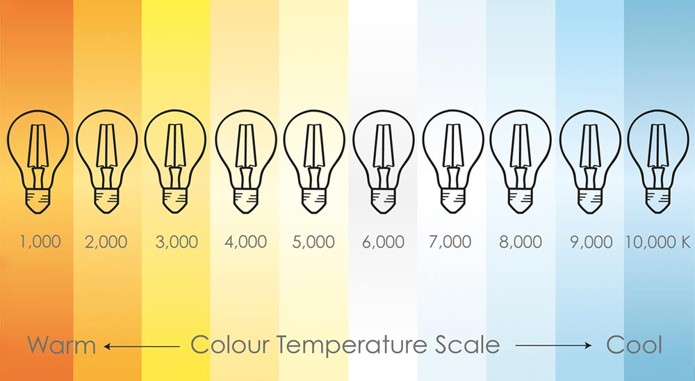
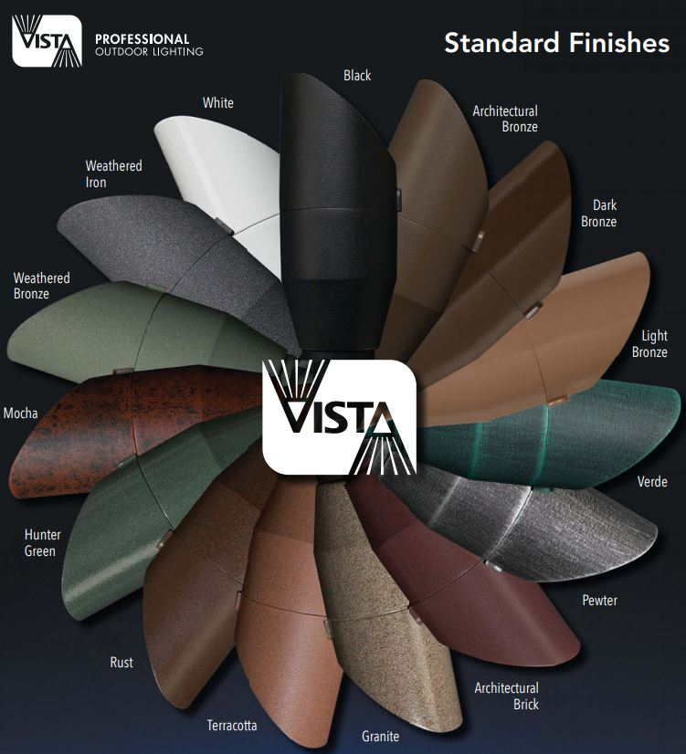

Products I Recommend
I only use the highest quality products in my projects. All of the products I use come from well-established manufacturers with lengthy warranties. Furthermore, I consult with you and allow you the option of choosing which specific brands and fixtures to use on your property.
Fixtures Most Commonly Requested
Vista Pro
Vista Pro Lighting is one of the highest quality fixture manufacturers on the market. Vista manufactures a wide range of fixtures and I am experienced in wiring and preparing these fixtures with transformers. I have access to Vista wholesale distribution and commonly use this lighting fixture in my projects.
I will commonly replace the bulb within the fixture with your desired temperature - I can supply a bulb that provides warm light or a bulb that provides cool light.

Item #5005
Combining the best of both worlds, the 5005 Up & Accent Fixture comes factory installed with Vista's new MR-16 LED lamp. Boasting the energy savings of LED technology and the flexibility and performance of MR-16 Halogen lamps, Vista's new MR-16 LED lamps come in your choice of 4.5W (equivalent to 20W halogen) or 5.5W (equivalent to 35W halogen) factory-installed. Available in 15°, 25°, 36° and 60° beam spread options.

Item #5006
Combining the best of both worlds, the 5006 Up & Accent Fixture with shroud comes factory installed with Vista's new MR-16 LED lamp. Boasting the energy savings of LED technology and the flexibility and performance of MR-16 Halogen lamps, Vista's new MR-16 LED lamps come in your choice of 4.5W (equivalent to 20W halogen) or 5.5W (equivalent to 35W halogen) factory-installed. Available in 15°, 25°, 36° and 60° beam spread options.

Item #2216
Highly versatile, this low voltage up & accent fixture is constructed of die-cast, copper-free aluminum for strength and reliability. The fully rotatable shroud is fitted with dual silicone o-ring gaskets to ensure a superior weather-tight seal under harsh conditions. A clear or frosted convex glass lens safeguards the lamp and optics. A super durable polyester powder coat finish is applied and available in 18 colors.

Item #5014i
The 5014i is ready to install with factory fitted integrated LEDs. The low volatge Up & Accent fixture is configured with hi-performance optic, integral driver and is constructed of die cast aluminum with wattage ranging from 1.5W to 3.5W. The 5014i will be able to dim using the Vista vPro2 electronic transformer and the complete line of Vista transformers. A durable polyester powder coat finish is applied and available in 18 colors.

Item #2267
A perfect fit for the contemporary landscape design, this low voltage path light fixture is constructed of die-cast, copper-free aluminum for strength and reliability. The stem is a 1/2" schedule-40 aluminum pipe with a 1/2" NPT. A super durable polyester powder-coated finish is applied and available in 18 colors.

Item #2265
A perfect fit for the contemporary landscape design, this low voltage path light fixture is constructed of die-cast, copper-free aluminum for strength and reliability. The stem is a 1/2" schedule-40 aluminum pipe with a 1/2" NPT. A super durable polyester powder-coated finish is applied and available in 18 colors.

Item #5106
The 5106 is a powerful and compact low voltage flood light fixture constructed of die-cast, copper-free aluminum and comes factory installed with advanced chip-on-board (COB) LED. With the energy savings of LED technology, the integrated, single LED chip/emitter is available in your choice of 2W, 3W and 4W. The fixture provides a powerful output range from 200-400 delivered lumens and also available in Warm, Neutral or Cool Color temp options.

Item #5105
The 5105 is a powerful and compact low voltage flood light fixture constructed of die-cast, copper-free aluminum and comes factory installed with advanced chip-on-board (COB) LED. With the energy savings of LED technology, the integrated, single LED chip/emitter is available in your choice of 2W, 3W and 4W. The fixture provides a powerful output range from 200-400 delivered lumens and also available in Warm, Neutral or Cool Color temp options.
All fixtures offer a wide selection of finishes
The most popular finishes are the V Series and Solid Brass
V Series
Solid Brass
Vista Finish Tiers
Vista offers their fixtures in several tiers of finishes. The Standard fixtures are sold at a base price while Premium< and Hand Crafted are sold at a small premium.